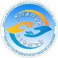

КГКП «Костанайский политехнический высший колледж»
Байбулатова А.Ж – преподаватель английского языка
КГКП «Костанайский колледж сферы обслуживания»
Бобылева Е. А – преподаватель английского языка

Учебное пособие для студентов первого курса
технико-технологического направления